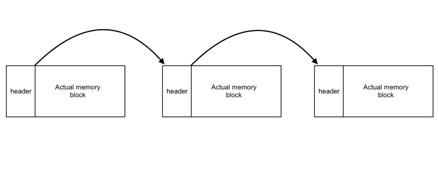
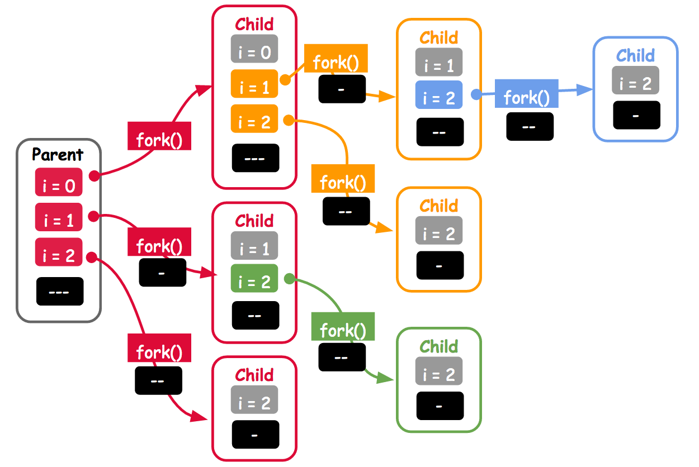

2017 年暑期系統軟體課程：台北場次 - coldnew's 筆記
Table of Contents
( 返回 2017 年暑期系統軟體課程：台北場次 )
( 返回 2017 年暑期系統軟體課程：台北場次 - coldnew's 筆記 HackMD 版 )
課程資訊
操作說明
這篇文章是透過 org-mode 以及 org-html-themes 製作出來，可以使用的快捷鍵資訊如下:
| 快捷鍵 | 用途 | 快捷鍵 | 用途 | |
|---|---|---|---|---|
? 或 h |
進入到 dashboard | - |
收起所有項目 | |
n |
移動到 下一個 標題 | + |
展開所有項目 | |
p |
移動到 前一個 標題 | r |
移動到下一個在清單的工作項目 | |
b |
向上滾動 | R |
移動到前一個在清單的工作項目 | |
< |
向上滾動到最上面 | q |
離開清單列表 | |
> |
向下滾動到最下面 | g |
重新載入頁面 |
TODO 課前測驗題
從下方至少選 3 題來作答，不僅要提供程式碼，也該描述思路。作答方式為建立「新的」HackMD 頁面，在「標題」提及自己的姓名或可資識別的代號，內文則應標註原題號，如 Q1:，隨後將新建的 HackMD 連結貼入報名表格，課程工作人員會逐一通知。
參考: HackMD 教學和作業原則
示範: coldnew
DONE Q1
考慮以下 C99 程式，解釋其具體作用，並用 for/while 迴圈改寫，隨後提供 uint16_t 的版本。在什麼場合會用到下方的程式碼？
#include <stdint.h> uint32_t func(uint32_t x) { uint32_t n = x; n = ((n & 0xffff0000) >> 16) | ((n & 0x0000ffff) << 16); n = ((n & 0xff00ff00) >> 8) | ((n & 0x00ff00ff) << 8); n = ((n & 0xf0f0f0f0) >> 4) | ((n & 0x0f0f0f0f) << 4); n = ((n & 0xcccccccc) >> 2) | ((n & 0x33333333) << 2); n = ((n & 0xaaaaaaaa) >> 1) | ((n & 0x55555555) << 1); return n; }
想法 & 思考
一開始看到這樣的題目可能不知道怎樣解，所以我們可以套用個數值 0x12345678 進去一行一行的測試:
uint32_t n = 0x12345678; n = ((n & 0xffff0000) >> 16) | ((n & 0x0000ffff) << 16); printf("0x%x\n", n);
0x56781234
可以發現到第一行是前後 2byte 進行對換的動作，即 0xAABBCCDD => 0xCCDDAABB 。
接下來讓我們看第二組:
uint32_t n = 0x56781234; n = ((n & 0xff00ff00) >> 8) | ((n & 0x00ff00ff) << 8); printf("0x%x\n", n);
0x78563412
可以注意到這一組命令，會做出 0xAABBCCDD => 0xBBAADDCC 這樣的運作，也就是對兩個兩個 byte 進行 swap。
接下來看第三組，這一組則是將 4 位元 (半個 byte, 英文為 nibble ) 進行了 swap。
uint32_t n = 0x78563412; n = ((n & 0xf0f0f0f0) >> 4) | ((n & 0x0f0f0f0f) << 4); printf("0x%x\n", n);
0x87654321
到此，我們已經將原本的 0x12345678 轉換成 0x87654321 了。
接下來這一組直接看看不懂
uint32_t n = 0x87654321; n = ((n & 0xcccccccc) >> 2) | ((n & 0x33333333) << 2); printf("0x%x\n", n);
0x2d951c84
因為看不懂，所以我們用二進制來觀察
從: 0x87654321 => 1000 0111 0110 0101 0100 0011 0010 0001
到: 0x2d951c84 => 0010 1101 1001 0101 0001 1100 1000 0100
可以看到是對續的兩個 bit 進行對調，用這樣的圖來看就比較好懂了:
終於到了最後一組，來跑看看
uint32_t n = 0x2d951c84; n = ((n & 0xaaaaaaaa) >> 1) | ((n & 0x55555555) << 1); printf("0x%x\n", n);
0x1e6a2c48
因為看不懂，所以我們一樣用二進制來觀察
？: 0xaaaaaaaa => 1010 1010 1010 1010 1010 1010 1010 1010
？: 0x55555555 => 0101 0101 0101 0101 0101 0101 0101 0101
從: 0x2d951c84 => 0010 1101 1001 0101 0001 1100 1000 0100
到: 0x1e6a2c48 => 0001 1110 0110 1010 0010 1100 0100 1000
原: 0x12345678 => 0001 0010 0011 0100 0101 0110 0111 1000
在這邊，我們可以透過 0xaaaaaaaa 和 0x55555555 發現到這邊的運算是對奇數/偶數的位元進行 swap 的動作。
此外，如果仔細看可以看出，原本的 0x12345678 經過這一系列的運作，變成了 0x1e6a2c48 ，而從 2 進制來看， 0x12345678 將所有的 bit 進行反轉，就會得到 0x1e6a2c48 。
於是我們知道了這個函式用途是作位元的反轉，我們可以整理前面的分析並將註解加回原始題目去:
#include <stdint.h> uint32_t reverse_bits_32 (uint32_t n) { /* swap 2-byte long pairs 0xAABBCCDD => 0xCCDDAABB */ n = ((n & 0xffff0000) >> 16) | ((n & 0x0000ffff) << 16); /* swap bytes 0xAABBCCDD => 0xBBAADDCC */ n = ((n & 0xff00ff00) >> 8) | ((n & 0x00ff00ff) << 8); /* swap nibbles 0x12345678 => 0x21436587*/ n = ((n & 0xf0f0f0f0) >> 4) | ((n & 0x0f0f0f0f) << 4); /* swap consecutive pairs */ n = ((n & 0xcccccccc) >> 2) | ((n & 0x33333333) << 2); /* swap odd/even bits */ n = ((n & 0xaaaaaaaa) >> 1) | ((n & 0x55555555) << 1); return n; }
for/while 迴圈版本
先建立函式原型
uint32_t reverse_bits_32(uint32_t x) { /* FIXME: return the reverse_bits result */ }
接下來需要一個暫存用的變數，我命名為 reverse_x (輸入到這函式的變數為 x)
uint32_t reverse_x = 0;
那要怎樣處理我們的迴圈呢? 我們知道要進行反轉的目標字元數是 32 , 因此這個迴圈要跑 32 次, 所以作個簡單的雛形如下:
for (int i = 0; i < 32; i++) { /* FIXME: How to do ? */ }
在這個迴圈裡面，我們檢查每一次要被處理的位元，假設他是 1 的話，再去更新 reverse_x 的內容。(reverse_x 預設是 0)
更新的方法很簡單，透過 or 運算子 | 來進行處理，由於我們要做的是字元反轉，因此假如我們 bit[3] 是 1 的話，則
從: 0000 0000 0000 0000 0000 0000 0000 1000 <- bit[3] = 1
到: 0001 0000 0000 0000 0000 0000 0000 0000 <- bit[28] = 1, bit[32 - 1 - 3]
從: 0000 0000 0000 0000 0000 1000 0000 0000 <- bit[11] = 1
到: 0000 0000 0001 0000 0000 0000 0000 0000 <- bit[20] = 1, bit[32 - 1 - 11]
所以可以知道，當要被處理的位元為 1 的時候，我們要這樣處理:
for (int i = 0; i < 32; i++) { if((x & (1 << i))) reverse_x |= 1 << ((32 - 1) - i); }
因此最後的程式如下:
#include <stdint.h> uint32_t reverse_bits_32(uint32_t x) { uint32_t reverse_x = 0; for (int i = 0; i < 32; i++) { if((x & (1 << i))) reverse_x |= 1 << ((32 - 1) - i); } return reverse_x; } int main(int argc, char *argv[]) { uint32_t reverse1 = reverse_bits_32( 0x12345678 ); uint32_t reverse2 = reverse_bits_32( reverse1 ); printf("0x12345678 -> 0x%x -> 0x%x\n", reverse1, reverse2); return 0; }
而這程式其實可以再簡化，省掉 if 的判斷:
#include <stdint.h> uint32_t reverse_bits_32(uint32_t x) { uint32_t reverse_x = 0; for (int i = 0; i < 32; i++){ reverse_x |= ( x >> ( ( 32 - 1 ) - i ) & 1 ) << i; } return reverse_x; }
uint16_t 版本: 目標為 32-bit 系統或是以上
假如目標平台本身就是 32-bit 系統或是更高位元 (64-bit, 128-bit ... etc)，則我們可以直接使用題目的版本作點 shift 就可以得到 uint16_t 的版本:
#include <stdint.h> uint32_t reverse_bits_32(uint32_t n) { n = ((n & 0xffff0000) >> 16) | ((n & 0x0000ffff) << 16); n = ((n & 0xff00ff00) >> 8) | ((n & 0x00ff00ff) << 8); n = ((n & 0xf0f0f0f0) >> 4) | ((n & 0x0f0f0f0f) << 4); n = ((n & 0xcccccccc) >> 2) | ((n & 0x33333333) << 2); n = ((n & 0xaaaaaaaa) >> 1) | ((n & 0x55555555) << 1); return n; } uint16_t reverse_bits_16(uint16_t x) { return (uint16_t) (reverse_bits_32(x) >> 16); }
這樣子的程式，一樣是可以順利運作的:
從: 0x1234 => 0001 0010 0011 0100
到: 0x3c48 => 0010 1100 0100 1000
uint16_t 版本: 目標為 16-bit 系統
假設今天的目標為 16-bit 系統，我們就不能用 uint32_t 的版本，因為系統最大的位元數是 16-bit ，如果要用軟體先做到模擬 32-bit 系統，在將其轉換回來這中間的損耗是划不來的。
因此我們要考慮自己改寫 uint32_t 的版本成 uint16_t, 其結果如下: (其實大部分都可以直接套用 32-bit 版本的算法)
#include <stdint.h> uint16_t reverse_bits_16(uint16_t n) { /* swap bytes */ n = ((n & 0xff00) >> 8) | ((n & 0x00ff) << 8); /* swap nibbles */ n = ((n & 0xf0f0) >> 4) | ((n & 0x0f0f) << 4); /* swap bit pairs */ n = ((n & 0xcccc) >> 2) | ((n & 0x3333) << 2); /* swap odd/even bits */ n = ((n & 0xaaaa) >> 1) | ((n & 0x5555) << 1); return n; } int main(int argc, char *argv[]) { uint16_t reverse1 = reverse_bits_16( 0x1234 ); uint16_t reverse2 = reverse_bits_16( reverse1 ); printf("0x1234 -> 0x%x -> 0x%x\n", reverse1, reverse2); return 0; }
0x1234 -> 0x2c48 -> 0x1234
uint16_t 版本: 目標為 16-bit 系統 (迴圈)
承上，目標一樣是 16-bit 的系統，這時候我們的迴圈版本就變成這樣了 (其實和 for/while 迴圈版本 差不多):
#include <stdint.h> uint16_t reverse_bits_16(uint16_t x) { uint16_t reverse_x = 0; for (int i = 0; i < 16; i++) { reverse_x |= ( x >> ( ( 16 - 1 ) - i) & 1 ) << i; } return reverse_x; } int main(int argc, char *argv[]) { uint16_t reverse1 = reverse_bits_16( 0x1234 ); uint16_t reverse2 = reverse_bits_16( reverse1 ); printf("0x1234 -> 0x%x -> 0x%x\n", reverse1, reverse2); return 0; }
0x1234 -> 0x2c48 -> 0x1234
使用到的場合: 加解密運算
透過本題的程式，可以將 0x12345678 轉變成 0x1e6a2c48 ，而這動作是可以反向的, 我們一樣可以將此函式套用在 0x1e6a2c48 從而得到 0x12345678 這樣的答案，也就是說將東西丟給這個函式，再把結果丟給這函式，可以得到原本的輸入:
0x12345678 == reverse_bits( reverse_bits(0x12345678) ) /* 兩者相等 */
利用這種特性，我們可以實作簡單的加解密程式 rcf.c ，如下:
#include <stdio.h> #include <stdlib.h> #include <stdint.h> uint32_t reverse_bit(uint32_t x) { x = ((x & 0xffff0000) >> 16) | ((x & 0x0000ffff) << 16); x = ((x & 0xff00ff00) >> 8) | ((x & 0x00ff00ff) << 8); x = ((x & 0xf0f0f0f0) >> 4) | ((x & 0x0f0f0f0f) << 4); x = ((x & 0xcccccccc) >> 2) | ((x & 0x33333333) << 2); x = ((x & 0xaaaaaaaa) >> 1) | ((x & 0x55555555) << 1); return x; } int main(int argc, char *argv[]) { if (argc < 3) { printf( "\nUsage:" "\t %s input.txt output.txt\n\n" "This is a simple encrypt/decrypt app " "based on reverse_bit algorithm.\n\n" , argv[0]); return 0; } const char *input_path = argv[1]; FILE *fin = fopen(input_path, "rb"); if (!fin) { fprintf(stderr, "ERROR: failed to open input file %s\n", input_path); exit(-1); } const char *output_path = argv[2]; FILE *fout = fopen(output_path, "wb"); if (!fout) { fclose(fin); fprintf(stderr, "ERROR: failed to open output file %s\n", output_path); exit(-1); } uint32_t ch; int nread; while((nread = fread(&ch, 1, sizeof(uint32_t), fin)) > 0) { /* if read size less than sizeof(uint32_t), just write it */ if (nread < sizeof(uint32_t)) { fwrite(&ch, 1, nread, fout); } else { uint32_t chn = reverse_bit(ch); fwrite(&chn, 1, nread, fout); } } fclose(fin); fclose(fout); return 0; }
這個程式可以使用以下命令進行編譯:
gcc rcf.c -o rcf
那要如何使用呢? 我們可以建立一個名為 hello.txt 的文字檔，有以下內容:
hello, this is a test
接下來使用這隻加密程式產生新的檔案叫做 hello_enc.txt
./rcf hello.txt hello_enc.txt
打開可以看到內容如下: (是不是成功加密了!)
66¦^V.^D4ö^DÎ<96>^V<86>^DÎ<96>Φ.^Dt
而這個檔案我們一樣可以透過這隻程式進行解密成 hello_dec.txt
./rcf hello_enc.txt hello_dec.txt
打開 hello_dec.txt 看看，內容是不是和原來的一樣 ?
hello, this is a test
使用到的場合: CRC-32 運算
從 使用到的場合: 加解密運算 這邊可以知道僅僅只是反轉一下位元就可以製作加解密程式，循環冗餘校驗 (CRC) 的實作也可以用到 位元反轉 (bit reverse) 的部分。
具體實作可以參考:
使用到的場合: Linux Kernel
Linux kernel 裡面有實作 bitrev32 等位元反轉的命令，可以在 bitrev.h 看到，最常用到的用途，則是在 ether_crc() 這個函式上:
/* * Helpers for hash table generation of ethernet nics: * * Ethernet sends the least significant bit of a byte first, thus crc32_le * is used. The output of crc32_le is bit reversed [most significant bit * is in bit nr 0], thus it must be reversed before use. Except for * nics that bit swap the result internally... */ #define ether_crc(length, data) bitrev32(crc32_le(~0, data, length)) #define ether_crc_le(length, data) crc32_le(~0, data, length)
使用到的場合: 快速傅利葉轉換
在進行快速傅利葉轉換(Fast Fourier Transform, FFT)之前，我們會需要進行位元反轉 (bit reverse)，從 FAST BIT-REVERSAL ALGORITHM 論文一開頭的描述來看:
足以知道位元反轉 (bit reverse) 對於快速傅利葉轉換(FFT)的重要性。
(註: Unscrambling for fast DFT algorithms 我沒找到電子檔)
此外，在 Bit Reversal on Uniprocessors 這篇文章也列舉了 30 種用來作位元反轉(bit reverse)的演算法，用來測試在不同硬體上面的效能比較。
開源專案與位元反轉
以下列出有使用 reverse bits 函式的知名開源專案以及程式碼位置 (點擊可以找到 GitHub 上的原始碼):
補充: C 語言實作 2 進制的 print 函式
在撰寫這一題的時候，順手寫了一個可以將 uint32_t 型別的輸入，以二進制的形式顯示出來的函式，這樣也可以比較方便的測試這一個題目:
#include <stdint.h> void print_binary(uint32_t x) { unsigned char *p = (unsigned char *) &x; unsigned char byte; for (int i = sizeof(uint32_t) -1; i >= 0; i--) { for (int j = 7; j >= 0; j--) { byte = (p[i] >> j) & 1; printf("%u", byte); if (0 == (j % 4)) printf(" "); } } printf("\n"); } int main(int argc, char *argv[]) { print_binary(0x12345678); return 0; }
0001 0010 0011 0100 0101 0110 0111 1000
延伸閱讀
- Best Algorithm for Bit Reversal ( from MSB->LSB to LSB->MSB) in C - Stack Overflow
- In C/C++ what's the simplest way to reverse the order of bits in a byte? - Stack Overflow
- Bit Twiddling Hacks - Reverse an N-bit quantity in parallel in 5 * lg(N) operations
- The Aggregate Magic Algorithms - Bit Reversal
- Reversing Bits and Bytes
- Bit Reversal on Uniprocessors
- 演算法筆記 - Bitwise Operation
- Re: 什麼是快速傅立葉轉換 - 看板 C_and_CPP - 批踢踢實業坊
- 一般信號處理，常用快速傅立葉轉換（FFT）來求得信所對應的頻譜
- 快速傅立葉轉換 | 線代啟示錄
TODO Q2
在 C 程式中，使用遞迴和 bit-wise operator 來實作乘法運算，請參考以下提示:
- 加法器是用於執行加法的電路元件，通常由 AND 閘、OR 閘 和 XOR 閘構成
- 也可用加法器實作減法，只要將減數轉成二補數，並注意溢位即可
- 也可用加法器實作減法，只要將減數轉成二補數，並注意溢位即可
半加器：將兩個一位二進位數相加 (input: A, B) (output: S, C)
全加器：將兩個一位二進位數相加 (input: A, B, Cin) (output: S, Cout)
波紋進位加法器：使用多個一位全加器構成 N 位加法器
半加器可用以下 C 程式來實作:
uint32_t half_add(uint32_t a, uint32_t b) { if (b == 0) return a; uint32_t sum = a ^ b; /* 相加但不進位 */ uint32_t carry = (a & b) << 1; /* 進位但不相加 */ return half_add(sum, carry); }
想法 & 思考
題目提供了半加器的實作方式，我們在列一次, 並先實作全加器
半加器
uint32_t half_add(uint32_t a, uint32_t b) { if (b == 0) return a; uint32_t sum = a ^ b; /* 相加但不進位 */ uint32_t carry = (a & b) << 1; /* 進位但不相加 */ return half_add(sum, carry); }
全加器
一個全加器可以透過兩個半加器實作，如下圖:
因此我們的實作是這樣的:
uint32_t full_add(uint32_t a, uint32_t b, uint32_t c) { uint32_t s1 = half_add(a, b); return half_add(c, s1); }
Overflow 怎辦?
int32_t mult(int32_t x, int32_t y) { unsigned int reg = 0; while (y != 0) { if (y & 1) reg += x; x <<= 1; y >>= 1; } return reg; }
DONE Q3
思考以下 C 程式的用途，以及在什麼場合用得到 (提示: 記憶體管理常式)，探討應用場合時，需要一併列出最小可編譯和運作的 C 程式碼。
void *p; // ... *p = (*p) & ~1;
思考 & 想法
要看這一題，先把 ~1 轉換成 0xfffffffe 這樣會比較好想，一般來說這種的用途是用在設定某個 bit (flag) 用的，也就是題目其實在問在記憶體管理函式中，怎樣的狀況會用到下面這個：
*p &= 0xfffffffe; // 0xfffffffe => // 1111 1111 1111 1111 1111 1111 1111 1111 1111 1111 1111 1111 1111 1111 1111 1110
從上面可以看出，執行這行程式時會將 bit[0] 歸零。
那這樣的東西要怎樣和記憶體管理常式扯到邊呢? 前面提到了這種作法是在設定某個 bit (flag) 用的，也就是說我們可以這樣想:
- 設定為 1 -> 該段記憶體使用中
設定為 0 -> 該段記憶體尚未被使用
實作 1 - 最簡單的 malloc
從上面的想法，可以想到每次進行 malloc 的時候，其實我們是這樣佔用記憶體的 (payload 為實際存放資料的區塊)
為了方便理解，我們首先定義自己的記憶體區塊來製作我們的記憶體管理程式，其中 MY_MEMORY_SIZE 決定了我們可以索取的記憶體大小。
在主程式開始之前，則需要呼叫 my_init() 來確保這個記憶體管理方式是有正確初始化的。
#define MY_MEMORY_SIZE 37 static uint32_t memory[MY_MEMORY_SIZE] = { NULL }; static uint32_t *brkp; static uint32_t *endp; void my_init() { brkp = memory; endp = brkp + MY_MEMORY_SIZE; }
接著定義我們的 sbrk() 函式，可以從 manpage 看到 sbrk() 的描述是這樣的
所以我們可以這樣實作他
void *my_sbrk(const size_t size) { if (0 == size) return (void *) memory; void *free = (void *) brkp; brkp += size; if (brkp >= endp) return (void *) -1; return free; }
有了 sbrk() 後，就可以透過他製作最簡單的 malloc() 了，在這邊我們對要到的記憶體標頭進行設定，將 flag 設定為 1 代表該區塊記憶體正在使用中。
void *my_malloc(const size_t size) { // blk_size = header + payload + footer size_t blk_size = 1 * sizeof(int) + size + 1 * sizeof(int); size_t *header = my_sbrk(blk_size); if ((int)header == -1) return NULL; *header = (blk_size << 1) | 1; // mark allocated bit return header + 1; // return payload address }
相對於 my_malloc() 會將 header 的尾巴設定 1 來代表該區塊被使用，當要進行 free() 的動作的時候，我們就把 header 的尾巴設定回 0 。
void my_free(const void *ptr) { size_t *header = ((size_t *) ptr) - 1 * sizeof(int); *header &= ~1; // unmark allocated bit }
最後在搭配一個簡單的測試程式，假如上面的 MY_MEMORY_SIZE 設定小於 36 就會遇到 assertion failed 的錯誤，代表已經用滿了可以用的記憶體了。
(因為每一次 malloc 佔用了 sizeof(int) *3 的大小，即 12 bytes, 因此 my_malloc() 呼叫 3 次，會用掉 36 bytes 空間，此時 my_sbrk() 會失敗)
int main(int argc, char *argv[]) { my_init(); int *a1 = my_malloc( 1 * sizeof(int)); assert(a1); *a1 = 1; printf("a1: %p, *a1 = %d\n", a1, *a1); int *a2 = my_malloc( 1 * sizeof(int)); assert(a2); *a2 = 2; printf("a2: %p, *a2 = %d\n", a2, *a2); my_free(a2); // try to free a2 int *a3 = my_malloc( 1 * sizeof(int)); assert(a3); *a3= 3; printf("a3: %p, *a3 = %d\n", a3, *a3); return 0; }
正常情況會得到這樣的結果:
a1: 0x10b6d9028, *a1 = 1 a2: 0x10b6d9058, *a2 = 2 a3: 0x10b6d9088, *a3 = 3
假如 MY_MEMORY_SIZE 設定為 30 的話，則會變成這樣，代表可用的記憶體已經用完了，無法進行配置。 (沒用 assert() 的話就會遇到 segmentfault)
a1: 0x10acf4028, *a1 = 1 a2: 0x10acf4058, *a2 = 2 Assertion failed: (a3), function main, file b.c, line 69. Abort trap: 6
這是一個非常簡單的 malloc() 實作，從這實作可以發現到我們並沒有作真的 free() 的動作，也因此如果一直呼叫 my_malloc() 會遇到記憶體爆掉的狀況。
接下來就講講如何透過 header 的尾巴那個 flag 來作閒置記憶體區塊的判斷。
實作 2 - 實作 1 改良版
在 實作 1 - 最簡單的 malloc 裡面，雖然我們有對使用中/不使用的記憶體區塊設定好了 flag, 然而我們並沒有使用他，也因此當呼叫 my_free() 的時候會發現其實他並沒有實質的作用。
這個實作將沿用 實作 1 - 最簡單的 malloc 的想法，製作出一個實際上可以用的 my_free() 函式。
(當然這個東西會有問題，比如記憶體碎片化的狀況)
因為是沿用前面的程式，基本的部分都差不多，差別在這次 MY_MEMORY_SIZE 設定為 30, 在前面的例子中這個數值在執行 a3 = my_malloc() 的時候就會爆掉了。
#define MY_MEMORY_SIZE 30 static uint32_t memory[MY_MEMORY_SIZE] = { NULL }; static uint32_t *brkp; static uint32_t *endp; void my_init() { brkp = memory; endp = brkp + MY_MEMORY_SIZE; } void *my_sbrk(const size_t size) { if (0 == size) return (void *) memory; void *free = (void *) brkp; brkp += size; if (brkp >= endp) return (void *) -1; return free; }
這次我們的 my_malloc() 則長得有點不一樣，他會透過 find_free_block() 去找尋可以使用的區塊位址。
void *my_malloc(const size_t size) { // blk_size = header + payload + footer size_t blk_size = 1 * sizeof(int) + size + 1 * sizeof(int); size_t *header = find_free_block(size); if ((int)header == -1) return NULL; *header = (blk_size << 1) | 1; // mark allocated bit return header + 1; // return payload address }
那要怎樣尋找可以使用的區塊位址呢? 我們可以先透過 my_sbrk(0) 檢查當前的位址，如果和 brkp 相同的話，則直接透過 my_sbrk() 進行配置。
反之，透過每一個記憶體區塊的大小找尋下一組可以使用的記憶體區塊，並返回位址。
void *find_free_block(size_t size) { /* check if we are at top of heap */ if (my_sbrk(0) == brkp) return my_sbrk(size); int *ptr = my_sbrk(0); /* find free block which also has enough size */ while (1) { /* if memory is in used, skip it */ if ( *ptr & 1 ) { ptr += 1 * sizeof(int) + (*ptr >> 1) + 1 *sizeof(int); continue; } /* if size is enough, use this block */ if ((( *ptr >> 1 ) >= size) || *ptr == NULL) break; /* oops, we search to end of the memory */ if (ptr >= endp) { return (int) -1; } } return ptr; }
my_free() 則維持和原本的一樣，當需要 free 的時候，設定好 flag 就行了。
void my_free(const void *ptr) { size_t *header = ((size_t *) ptr) - 1; *header &= ~1; // unmark allocated bit }
最後就是我們的測試，透過記憶體位置可以看到基本的 my_free() 有作用了。
int main(int argc, char *argv[]) { my_init(); int *a1 = my_malloc( 1 * sizeof(int)); assert(a1); *a1 = 1; printf("a1: %p, *a1 = %d\n", a1, *a1); int *a2 = my_malloc( 1 * sizeof(int)); assert(a2); *a2 = 2; printf("a2: %p, *a2 = %d\n", a2, *a2); my_free(a2); // try to free a2 int *a3 = my_malloc( 1 * sizeof(int)); assert(a3); *a3= 3; printf("a3: %p, *a3 = %d\n", a3, *a3); my_free(a3); // try to free a3 my_free(a1); // try to free a1 int *a4 = my_malloc( 1 * sizeof(int)); assert(a4); *a4 = 4; printf("a4: %p, *a4 = %d\n", a4, *a4); return 0; }
a1: 0x10644f028 *a1 = 1 a2: 0x10644f078 *a2 = 2 a3: 0x10644f078 *a3 = 3 a4: 0x10644f028 *a4 = 4
TODO 實作 3 - 實作 2 改良版
TODO: 避免碎片化
需要實作碎片合併
使用情境
實作記憶體管理常式的方法有很多，在 A Malloc Tutorial 裡面有講解到更完整的資訊。
此題目的應用場合應該是在有限的程式空間 (flash size 很小)的情況下，需要簡單的記憶體管理機制，使用這種方式來管理記憶體雖然性能不好，但是也可能夠用。
舉例: FreeRTOS 的記憶體管理機制中， heap_1.c 就是一種很簡單的記憶體管理方式，他描述是這樣的:
The simplest possible implementation of pvPortMalloc(). Note that this implementation does NOT allow allocated memory to be freed again. See heap_2.c, heap_3.c and heap_4.c for alternative implementations, and the memory management pages of http://www.FreeRTOS.org for more information.
而和此題實作比較接近的，則是 FreeRTOS 的 heap_2.c
A sample implementation of pvPortMalloc() and vPortFree() that permits allocated blocks to be freed, but does not combine adjacent free blocks into a single larger block (and so will fragment memory). See heap_4.c for an equivalent that does combine adjacent blocks into single larger blocks. See heap_1.c, heap_3.c and heap_4.c for alternative implementations, and the memory management pages of http://www.FreeRTOS.org for more information.
延伸閱讀
- Dynamic memory Management
- Lecture 08 - Dynamic memory Allocation
- 08-MemoryMalloc
- A Malloc Tutorial
- Project 3: A Custom malloc() and free()
- A quick tutorial on implementing and debugging malloc, free, calloc, and realloc
- My mallock using mmap
- What does brk( ) system call do?
- SystemProgramming - Memory, Part 2: Implementing a Memory Allocator
- Implementing malloc
- Memory Allocation
- Understanding glibc malloc
- Writing a Simple Garbage Collector in C
- Optimizing Dynamic Memory Management">這份講解了 k&r 的 Heap Manager
TODO Q4
考慮以下 C 程式在 GNU/Linux 中，透過 linked list 來實作動態記憶體管理 (malloc 和 free)，虛擬記憶體的使用如下圖，初步的程式如下方，要注意到程式碼並不完整，也不能在多執行緒環境安全運用。
請改寫 malloc 程式碼使其正確運作，並提供對應的 free 實作。

#include <stddef.h> #include <unistd.h> #include <pthread.h> struct header_t { size_t size; unsigned is_free; struct header_t *next; } *head, *tail; static struct header_t * get_free_block(size_t size) { struct header_t *curr = head; while (curr) { if (curr->is_free && curr->size >= size) return curr; curr = curr->next; } return NULL; } pthread_mutex_t global_malloc_lock; void *malloc(size_t size) { size_t total_size; void *block; struct header_t *header; if (!size) return NULL; if ((header = get_free_block(size))) { header->is_free = 0; return ? /* FIXME: */ } total_size = sizeof(struct header_t) + size; if ((block = sbrk(total_size)) == (void *) -1) return NULL; header = block; header->size = size; header->is_free = 0; header->next = NULL; // ... /* FIXME: */ return ? /* FIXME: */ }
DONE Q5
假設下方 C 程式檔名為 fork.c ，在 GNU/Linux 上編譯得到名為 fork 的執行檔，我們可用 ./fork | wc -c 計算輸出的 - 字元，請解釋程式行為和輸出的 - 字元數量的關聯。
#include <stdio.h> #include <sys/types.h> #include <sys/wait.h> #include <unistd.h> int main() { for (int i = 0; i < 3; i++) { fork(); printf("-"); } wait(NULL); wait(NULL); wait(NULL); return 0; }
思考 & 想法
這題乍看之下應該是要產生出 14 個 - 符號，然而實際執行卻是生出了 24 個，從 C 语言的谜题 可以注意到， printf() 呼叫的時候，並不會馬上把資料寫入到 stdout 去，而是會先暫存到一個緩衝區中，也許問題就在這邊。
讓我們加入 fflush() 強迫 printf() 將資料從緩衝區寫到 stdout 看看。
for (int i = 0; i < 3; i++) { pid_t pid = fork(); printf("-"); fflush(stdout); } wait(NULL); wait(NULL); wait(NULL);
這樣的執行結果，就是我們想要的 14 個 - ，可見問題的確出在 printf() 沒有立即將緩衝區的資料寫入到 stdout 而導致 fork 的時候連緩衝區的資料一起 fork 一份了。
要了解整個程式的 fork 流程，我們可以把原本程式稍微改成下面這樣，再透過 pstree 去顯示
#include <stdio.h> #include <sys/types.h> #include <sys/wait.h> #include <unistd.h> int main() { for (int i = 0; i < 3; i++) { fork(); printf("-"); } wait(NULL); wait(NULL); wait(NULL); sleep(10); return 0; }
將檔案編譯成 fork.out 並透過 pstree 去觀察 fork 的狀況 (n 個迴圈總共會出現 2^n - 1 個 process, 此例來看就是有 8 個 process)
./fork.out & pstree -p | grep fork.out
|-fork.out(14759)-+-fork.out(14762)-+-fork.out(14766)---fork.out(+ | | `-fork.out(14767) | |-fork.out(14763)---fork.out(14765) | `-fork.out(14764)
可以看到此題迴圈跑 3 次的狀況，共出現了 8 個 process，用圖片表達的話就是這樣。
當我們的 printf() 有把透過 fflush() 把緩衝區清乾淨的狀況下，就會像上圖一樣，最終印出 14 個 - 。
那緩衝區沒弄乾淨的情況呢? 就會變成這樣了，在 fork() 下面的 - 就是被複製走而多出來的傢伙。

TODO 課堂醒腦題
這邊題目是在上課前用來醒腦用的
TODO Q1
在 C 語言程式裡面，如果這樣執行會得到什麼結果
1 << 2 + 3 << 4
想法 & 解答
答案是 512 ，這題在考運算式的優先權。
為什麼 C 語言要這這樣設計?
C 語言 設計是 1972 ~ 1974, 但是一直到 1989 才標準化
TODO 課前題目
在邏輯上你有個 x==y 的運算子，請不使用任何比較器做出一樣的成果
x == y
答案
!(x ^ y)
想法
從邏輯設計上學到的， XOR 的結果
x ^ y
010
010 = 0
011 = 001
TODO 臨時筆記 (第一天)
TODO 21 世紀的系統軟體
課程連結: https://hackmd.io/s/BkeL-hLtg
21 世紀的系統軟體 => 程式碼夠美嗎?
unix 原始程式馬 註解:
You are Not expected to understand this
unix 最早是開發在 PDP-7 上，後來移植到 PDP-11 (16bit) (具有 virtual memory)
virtual memory -> swapper (扮演 disk 和 memory 之間的資料切換處理者)
BlackDuck 是個 blabla, 提到了大部分的公司都是採用 opensource
我們既然採用別人的成果，是否有想過一件很可怕的事情? Linux 自從 4.1 版本，程式碼超過 2000 萬行，假設你工作到退休，人生只有 1w 天，linux kernel 只有 2000 萬行，你會讀不完
更可怕的是，linux 每小時修改 8 次(一次可能幾千行)，改版非常快，我們需要一個有效的方法來檢驗我們看到的東西對不對
ARM Cortex-M4 可以做到 sdiv (軟體除法)並且可以在 2cycle 完成 (過去用的查表能辦到嗎?)
手機裡面會有 CPU, GPU 和 DSP, 分工是個很大的問題
比如說 Font rasterization , 這部份是交給 CPU 運算, 我們知道文字本身是數學方程式，要透過運算轉成點陣圖
如果我們先用 CPU 把繪圖指令丟給 GPU, GPU 再把東西丟給 CPU, 這樣一來一往很吃時間，所以更多是 CPU 先把字處理好後，再把圖片送給 GPU (你要能散用 GPU 支援是非常困難的)
人寫出來的東西要和 compiler PK 是非常困難的事情
(投影片: From source to binary)
TODO 深入理解 CPU 和異構計算蕊片
ASIC: 完全針對應用特化的晶片
識別鈔票的方法會改，因此驗鈔機面有很大比例是用 FPGA (可以更新韌體) 但是速度又快
DSP: 數位訊號處理
bitcoin 用 GPU 是在算 hash, 每秒可以達到 萬億次 (每秒)
TODO 課中題目 Q1
size_t strlen(char *s); int longer(char *a, char *b) { return strlen(a) - strlen(b) > 0; }
- (a) 何時不正確? 正確版本為何?
(b) 如何修正
提示: 考慮極端狀況
TODO 思考 & 想法
這樣的程式何時會不正確呢?
man strlen
超過 maxlen 時行為就不對了 ? <--- 有號數 無號數?
如何修正?
size_t strlen(char *s); int longer(char *a, char *b) { return strlen(a) > strlen(b); }
如果 strlen(a) - strlne(b) 為負的, 那應該是 unsigned 還是 signed ?
TODO
有號數 無號數
TODO 課中題目 Q2
(用硬體思考, 實作倍數)
| 倍數 | shift | add/sub | Expr |
|---|---|---|---|
| 31 | 1 | 1 | (x <<5) - (x) |
| -6 | 2 | 1 | (x << 1) - (x << 3) |
用這種狀況來看，11 和 55 要怎作 ?
| 倍數 | shift | add/sub | Expr |
|---|---|---|---|
| 11 | 2 | 2 | (x << 3) + (x << 2) + x |
| 11 | 2 | 2 | (x << 4) - (x << 2) - x |
| 倍數 | shift | add/sub | Expr |
|---|---|---|---|
| 55 | 2 | 1 | (x << 6) - (x << 3) - (x) |
這東西重要在哪呢？像是 INTEL CPU 有一個指令 LEA
Intel 的 addressing model 搭配 LEA (CSIC 風格的指令) 很好用，透過這樣的處理可以得到一個帖定的數值，而不用透過複雜的數學運算
ARM 相對的是 Barrel Shifter
http://www.davespace.co.uk/arm/introduction-to-arm/barrel-shifter.html
https://stackoverflow.com/questions/1658294/whats-the-purpose-of-the-lea-instruction
TODO 作業 reverse bit 討論
注意到題目輸入值域很大 0 ~ 2^32 - 1, 要怎樣檢驗?
這樣的程式的問題: 執行時間不固定, 某些形式可以得到很短的時間
你只要追蹤花費的時間，就可以推敲出數值的分布
uint32_t reverse_bits_32(uint32_t x) { uint32_t reverse_x = 0; for (int i = 0; i < 32; i++) { if((x & (1 << i))) reverse_x |= 1 << ((32 - 1) - i); } return reverse_x; }
這也是為何這種方式比較好:
#include <stdint.h> uint32_t func(uint32_t x) { uint32_t n = x; n = ((n & 0xffff0000) >> 16) | ((n & 0x0000ffff) << 16); n = ((n & 0xff00ff00) >> 8) | ((n & 0x00ff00ff) << 8); n = ((n & 0xf0f0f0f0) >> 4) | ((n & 0x0f0f0f0f) << 4); n = ((n & 0xcccccccc) >> 2) | ((n & 0x33333333) << 2); n = ((n & 0xaaaaaaaa) >> 1) | ((n & 0x55555555) << 1); return n; }
在 linux/gcc 下，有一個 macro 叫做 byte order BYTE_ORDER
https://gcc.gnu.org/onlinedocs/cpp/Common-Predefined-Macros.html
讀 GCC 手冊可以得到很多歷史梗
__BYTE_ORDER__ is defined to one of the values __ORDER_LITTLE_ENDIAN__, __ORDER_BIG_ENDIAN__, or __ORDER_PDP_ENDIAN__ to reflect the layout of multi-byte and multi-word quantities in memory. If __BYTE_ORDER__ is equal to __ORDER_LITTLE_ENDIAN__ or __ORDER_BIG_ENDIAN__, then multi-byte and multi-word quantities are laid out identically: the byte (word) at the lowest address is the least significant or most significant byte (word) of the quantity, respectively. If __BYTE_ORDER__ is equal to __ORDER_PDP_ENDIAN__, then bytes in 16-bit words are laid out in a little-endian fashion, whereas the 16-bit subwords of a 32-bit quantity are laid out in big-endian fashion.
You should use these macros for testing like this:
/* Test for a little-endian machine */ #if __BYTE_ORDER__ == __ORDER_LITTLE_ENDIAN__
ARM 處理器在開機的時候，會檢查 endian bit, 但是編碼是固定的 (always big, or always little (instruction encoding))
為何 UART baud rate 不是 2^n 次方? 最早的 baud rate 用在電報，是 75 baud
後來每次擴充都是兩倍, 75 -> 150 -> 300 -> 600 -> 1200...
--
linux kernel: //sound/sparc/dbri.c
用 switch case, 不加上 break: duff's device
loop unrolling :CPU predictor 做的在好也還是有機會出錯
--
ISM 波段，給一般人可以用的 2.4 ~ 2.5GHx
TODO 軟體缺失導致的危害
Barr Group 是世界上有名的諮詢公司
TODO 形式化驗證
透過數學來定義行為、開發、驗證
從硬體攝計開始普及
CompCert
形式化驗證行情價 1000USD (每行)
台灣很少軟體品質產業
你怎確保你的無人機是可靠的?
台灣用的比較多還是 IC 設計公司
台灣有哪些軟體公司出了錯會造成人命?
車用 ADAS 系統 mobileye, mediatek
COSCUP: Piko/RT linuk like real time kernel
形式化驗證要先寫 lemma
echronos RTOS 證明 scheduling interrupt 需要上網查 , 手段叫做 OG
數學導論
linux kernel 把 BKL 移除掉 (big kernel lock)
製作智慧卡很厲害的公司: NXP, 曾經有 1/4 營收來自智慧卡
eal7 smart card
CC: Common Criteria (安全等級)
EAL CC 有七個等級, EAL5 以上都是軍事等級
有產值: 前後左右都沒有在做的事情
現在形式化驗證在 IC 設計已經是顯學: google: arm formal verifcation
EAL7 之所以難，就是因為要包山包海都懂
CertiKOS
Promela consumer
TODO 重新理解數值
IOTA
tango 本質是 DAG, 不尋換，有方向
https://iota.org/IOTA_Whitepaper.pdf
程式碼執行順序改變，結果一樣，稱為 code motion
Koopman 教授有一本書, 為業界問題的 case study
TODO carryless
Galois (和人決鬥而死，死前把數學遺稿寫出 FIXME: 來源)
五次方程式不存在公式解 (啊貝爾)
美國/加拿大很多東西禁止出口: ex: 高可靠性的加密方法
jitter: 找出數值分布
TODO Modern Microprocessors
- 簡單定義: 你我身邊每天在用的東西
numa
intel 佔領 server CPU, 要從 .com 泡沫化開始說起 (90 年代末期)
浮點數當時在 server CPU 有一個很重要的應用: 股票 (現在也是)
你用 benchmarking 才可以知道一個系統的特性
ILP (Instruction-Level Parallelism)
CPI (Cycle per instruction)
以前統計一個程式有 7% ~ 13% 在做 branching
dispatch 也是成本，現在 CPU 會想辦法減少這邊的成本 => ARM DynamIQ
dynamiq multiple issue => Where does big.LITTLE fit in the world of DynamIQ?
dynamiq multiple dispatch => Exploring DynamIQ and ARM’s New CPUs: Cortex-A75, Cortex-A55
IF: 4
ID: 1
Rename: 1
Dispatch: 1
echo cancellation (回音消除, 抗噪耳機)
AEC (聽覺迴聲消除) -> 運算量很大 -> 用 DSP 處理
ARM64 -> Aarch64 (架構名字, instruction encoding 還是 32bit)
VOIP 因為 CPU 效能提升，可以不需要額外硬體來作 AEC
branch prediction 和 machine learning 有關 ( google)
OOO (out of order execution) <-- 對效能提升有限，但是功耗增加 （A72 有這功能，但是 A73 關掉了）
compiler: auto vectorization, specularization
hadoop 裡面排序用 merge sort (穩定) 原本的排列順序是固定的
TODO Concurrency
基本上讀文章都要非常小心，尤其是和 CPU 架構相關的
hyperthreading: 硬體上的 thread
object -> 抽象詞 (連帶著的東西)
Rob Pike 現在在 Google 工作, 在 google 帳號是 r@google.com, 是 Go 語言的主力成員
聯發科 7?775 晶片, 多核因為問題關掉剩下一核
Red Hat 很大的客戶來自 銀行業 和 醫院相關, 因此 Java 在 concurrency 上實作比較完散 (資料很多)
LOCK-FREE <- 預習
memory barrier -> 白算盤用 fence
TODO 其他
L2 lock down
__vdso_clock_get_time
TODO 臨時筆記 (第二天)
NaN 應該怎樣表示? 如果我應用一個數值來表示 NaN, 那我是不是佔用了一個位置? 那這樣不同位元的 NaN 又該如何表示? 32bit 和 64bit 的 NaN 是不是一樣? 是否應該要不一樣?
TODO QUIZ
Q6: 考慮以下程式碼:
#define N 1024 void diag(int A[4][4], int val) { for (long i = 0; i < N; i++) A[i][i] = val; }
當用 gcc -O2 -S 編譯可得以下組合語言輸出:
.globl diag .type diag, @function diag: leaq 20480(%rdi), %rax .L2: movl %esi, (%rdi) addq $20, %rdi cmpq %rax, %rdi jne .L2 rep ret
請試著從最佳化反推對應的 C 程式碼，並避免將 N 寫死。
TODO 思考 & 想法
void diag(int A[4][4], int val) { L2: int N = 1024; if(rax == N) goto L2; }
| %rax | |
| %rbx | |
| %rcx | |
| %rdx | |
| %rdi | 20480 |
| %rsi |
leaq 0x020(%rcx,%rax,4), %rcx
The 0x20 is the offset, which is added to the effective address. There is no bit shifting, unless you count the *4 as a bit shift. (There is no + 4.) Essentially, this is performing the operation described in pseudocode by
RCX := RCX + RAX * 4 + 0x20
TODO CFI
在 C 語言沒有數學上的 array, (都是一維)
.cfi_startproc
.section __TEXT,__text,regular,pure_instructions .macosx_version_min 10, 12 .globl _diag .p2align 4, 0x90 _diag: ## @diag .cfi_startproc ## BB#0: pushq %rbp Ltmp0: .cfi_def_cfa_offset 16 Ltmp1: .cfi_offset %rbp, -16 movq %rsp, %rbp Ltmp2: .cfi_def_cfa_register %rbp xorl %eax, %eax .p2align 4, 0x90 LBB0_1: ## =>This Inner Loop Header: Depth=1 movl %esi, (%rdi,%rax) movl %esi, 20(%rdi,%rax) movl %esi, 40(%rdi,%rax) movl %esi, 60(%rdi,%rax) movl %esi, 80(%rdi,%rax) movl %esi, 100(%rdi,%rax) movl %esi, 120(%rdi,%rax) movl %esi, 140(%rdi,%rax) addq $160, %rax cmpq $20480, %rax ## imm = 0x5000 jne LBB0_1 ## BB#2: popq %rbp retq .cfi_endproc .subsections_via_symbols
void diag(int A[4][4], int val) { int *Abase = &A[0][0]; long i = 0; long lend = N * (N + 1); do { Abase[i] = val; i += (N + 1); } while (i != lend); }
可以少掉存取某段記憶體空間的先前準備, 這邊把乘法變成了加法 (省掉時間)
TODO concurrency
atomic instruction 在硬體怎樣實作? ex: Exclusive monitor
純軟體實作: Dekker's algorithm (正確的，問題是太慢)
RMW (Read-modify-write):
A [0] += 1;
讀取 A[0] 的數值 => + 1 => 寫回去 (RMW) , 中間可能被打斷? 當然(考慮多核狀況)
transaction
關鍵: 我們要了解我們的行為，否則作不出合適的程式碼
ARM 指令: ldrex , strex
CAS: (Compare And Swap)
TAS: (Test And Set)
我用 C 語言產生直接對應的組合語言 -> intrinsic
C11 加入 atomic (注意到不是所有 compiler 都支援)
_Atomic const int *p1;
C++20 gcc 已經支援 (-std=c++2a)
mutex 可不可以重複 lock ? => mutex recursive lock
priority inheritance
TODO 編譯器和最佳化原理
SQL 有一個很重要的東西叫做 stored procedure (sql92)
sqlite : explain 可以把 opcode 印出來
為何模擬器不使用 GPU? 因為我們不知道執行的環境是否有 GPU, 以及 GPU 是否夠強 (GPU 不夠強甚至可能模擬器跑得比 CPU 慢)
邏輯哲學論 - 維根斯坦
能否用任意的 REGEXP 解析 HTML? 答: 用標準的 REGEXP 辦不到 (HTML 可以容許錯誤，深度是無窮的)
PCRE (perl 修改過的 RE) 就可以解析 HTML
討厭的數學 -> hoare logic
man atexit
C runtim 要能夠處理返回直，也要可以處理 atexit 的介入
1996 年 doom 開發者: C is what you see is what you get
libgcceh (作必要的例外處理 setjmp/longjmp)
典型的 UNIX 有些東西很難實作: exec, signal (典型 UNIX: 很多操作是同步的)
setjmp/longjmp 和 ABI 有關係
馮紐曼(John von Neumann): 怎麼會有人需要寫組合語言，查表就好了
c99 引入關鍵字 restrict
開 /usr/include/string.h 找 memcpy
/* Copy N bytes of SRC to DEST. */ extern void *memcpy (void *__restrict __dest, const void *__restrict __src, size_t __n) __THROW __nonnull ((1, 2)); /* Copy N bytes of SRC to DEST, guaranteeing correct behavior for overlapping strings. */ extern void *memmove (void *__dest, const void *__src, size_t __n) __THROW __nonnull ((1, 2));
memcpy src 和 dst 不可以 overlap, 要 overlap 要用 memmove
TODO QUIZ Q7
void merge(long *dst, ling *src1, ling *src2, size_t n) { size_t i1 = 0. i2 = 0, id = 0; /* line 4 ~ 7 對效能影響比較大 */ while(i1 < n && i2 < n) { if (src1[i1] < src2[i2]) // <-- 效能問題 ? dst[id++] = src1[i1++]; else dst[id++] = src2[i2++]; // <-- predict } while(i1 < n) dst[id++] = src1[i1++]; while(i2 < n) dst[id++] = src2[i1++]; }
think
while(i1 < n && i2 < n) { int cmp = src1[i] <= src2[i]; // 1, 0 long min = min(src1[i1], src2[i2]); dst[id++] = min; i1 += min; i2 += !min; }
用 perf 觀察 branch perdictor 行為
perf stat -e branches -e branch-misses -e cycles -e instructions ./mergesort 300000000 1
TODO 編譯器和最佳化原理
C99 引入 restrict 讓編譯器最佳化有個依據
GIMPLE -> GCC 的 IR
IPO (Inter-Procedural Optimization)
Android LTO
cortex-m 的存在是用來取代 arm7
Optimize uClinux for ARM Cortex-M4
interrupt latency
kernel 有一個計畫: auto-reduce project
電腦很多詞彙來自數學, 比如程式的 function 就是來自數學的函數(function), 數學的 function 可以合成，但是 C 語言的 function 不能合成，function 裡面不能定義 function (但是數學的可以)
C 語言的 fucntion 本質上是 procedure
ARM Procdefure Call Standard (AAPCS)
ATPCS (ARM 對 16 位元的 thumb)
TODO 虛擬機設計與實作
Introducing BOLOS: Blockchain Open Ledger Operating System
公司: Ledger 是由 Bitcoin Core (檢驗區塊練) 的人所創辦
產品: Ledger Blue (企業級的安全裝置)
bitcoin hard fork
MMU: Memory Management Unit (page fault 有三種: Major, Minor, invalid)
MPU: Memory Protection Unit
uVisor Debugging Facility Improvements for ARM mbed
SFI (software fault isolation)
linux ftrace
TEE (trust zone)
https://www.arm.com/products/processors/technologies/trustzone/tee-smc.php
TODO 以 Linux 為分析對象
Thread, Process, Task 沒有一個放諸四海的定義, 在不同作業系統用詞不一樣
ex: Android 的 Task (Thread + Process)
最早的 Linux 是沒有原生的 thread, 是後來才加入支援的
fork / clone
Q: fork 就是把 parent 的內容一模一樣複製給 child (這句話錯在哪?)
A: 實際是複製 當下 (看 main 手冊) 但是很多東西是不會繼承自 parent process 的
LWP (Solaris 用語, linux 很多用語是學/仿效 Solaris 用語)
Linux 用 clone 去建立 thread (而不是 fork, clone 和 fork 不同)
如果以現代 Linux 實作，要對 process 和 thread 進行區分是很困難
Android 的 bionic 和 glibc 有很大的相容，但是像是 pthread 就是不一樣
https://android.googlesource.com/platform/bionic/+/ics-mr1-release/libc/docs/OVERVIEW.TXT#148
pthread_cancel(): pthread_cancel() will *not* be supported in Bionic, because doing this would involve making the C library significantly bigger for very little benefit.
TODO MicroKernel
EJBOSS (Enterprise Java Bean Open Source) -> JBoss (梗)
Source Enclave coprocessor
khttpd -> tux web server
為何 userspace 的 nginx 效能甚至比 khttpd 好，關鍵是在 io 的部分 (epoll)
linux kernel 的發展有點像是 microkernel 的風格 (不會把東西都塞進在 kernel)
比如 kernel 實作 epoll, nginx 就可以透過 epoll 實現良好效率的 http server
ceph-fuse 雲端檔案系統
dragonflybsd filesystem 也是執行在 userspace => 有很多原本是 monolithic kernel, 慢慢的把很多元素搬到 userspace 來
可以從 task_struct 來看 linux 還是屬於 monolithic kernel
Linux thread state trasnsition
scheuled 在選出下一個要執行的任務, 發生 preeemption 時會將任務放回 ready queue
preempt (搶佔, 動詞)
perrmptive (形容詞) premmptible
preemptive process scheduling
Making Linux do Hard (Real-)Time
Linux 本質上以機可以做到 software real-time, 但是距離 hard-realtime 是需要時間
http://concurrent-rt.com 可以做到 3 ~ 5us response time (RTOS 一般都是 < 10us)
Real-time linux 賣點是效能要接近
pagefault 所花的時間就是 10us
priority inheritance (PI)
threaded interrupt
TODO Semaphore 與 mutex
p.38
能否 lock 一個 mutex 好幾次 => resurive lock
mutex 在 linux 不是單純的 lock , 而是一系列實作
priority inversion => 優先權會倒轉
priority inversion => 是個協定
我們之所以要發展 mutex -> 希望保護共享資源
很常見的解法叫做 PI => priority inheritance
futex 在 userspace 實作 => scalable
能在 userspace 作愈多 => 在 SMP 情況下更容易 migrate
linux 作為管理硬體的執行單元 => 本質上是不可數
每個 CPU 核心都有一個獨立的 register file (r0, r1, r2 ....etc)
(有獨立的 PC (point counter))
L1 cache 是完全獨立
sync 在確保 IO 的一致性 (有沒有可能被別人搶佔?)
其實要做到完全的 preemptive 是很困難的
ARM code density 很高
ARM 因為 virtualization 做的比較慢，所以可以避開許多問題 (效能還可以)
ARM server 的存在不是為了和 Intel 打對比 (不是一對一競爭，是商品競爭)
目前地表最快的 ARM 版本: Cortex-A75
500 大超級電腦 -> 10% 在做金融機構 (避險基金的高頻交易)
real-time kvm
ARMv8.3a <- 改變很大
ARMv8-A architecture – 2016 additions
可以針對 ARM 方向的改版，可以推測出市場方向在哪裡